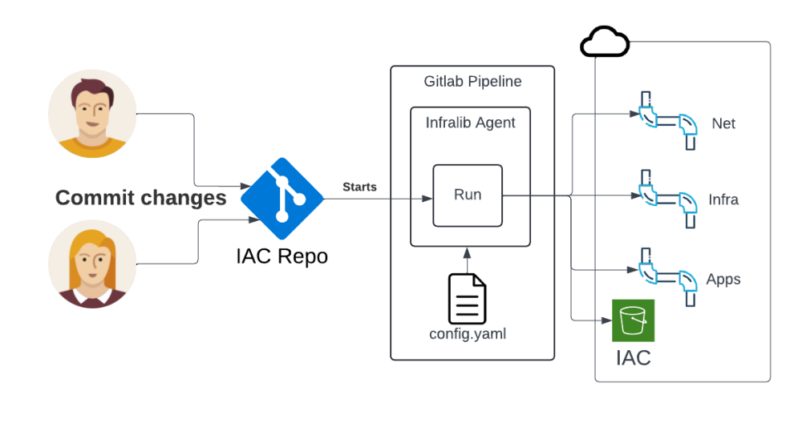
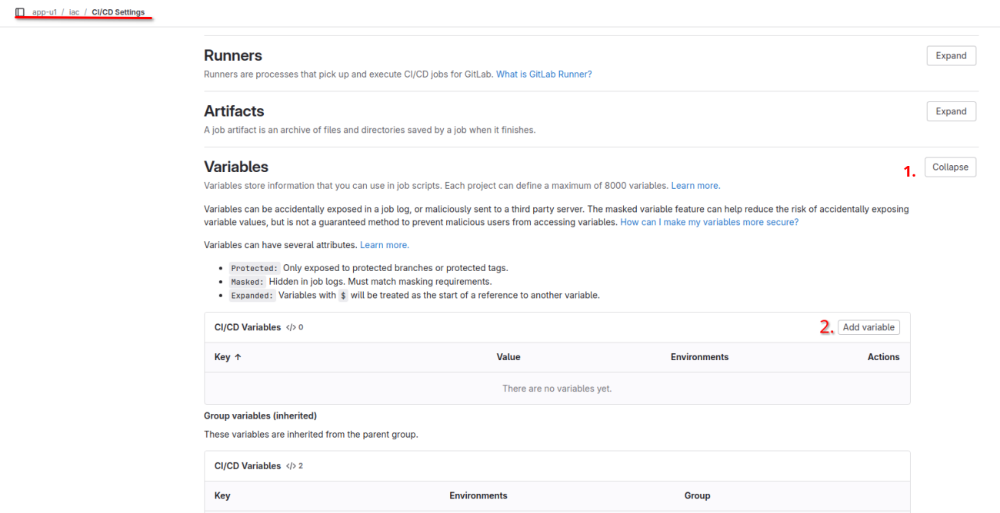
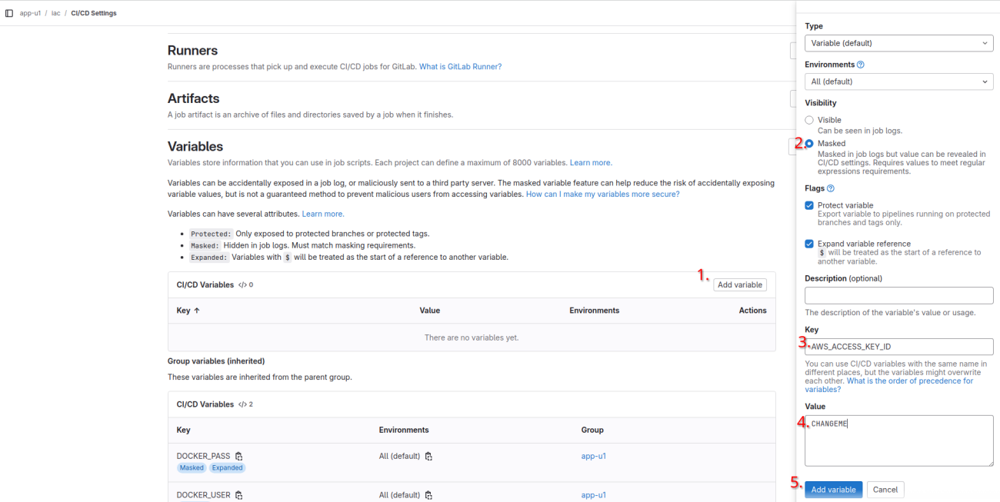
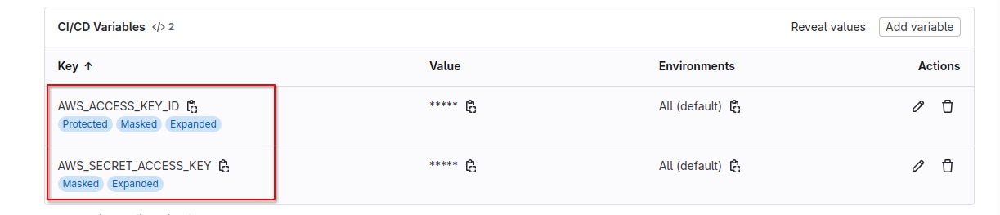
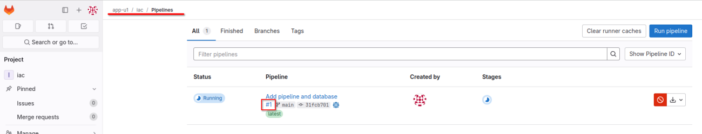
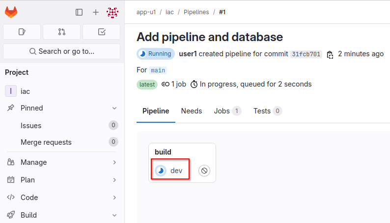
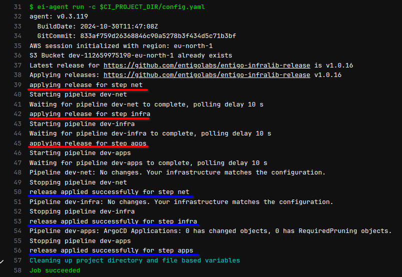
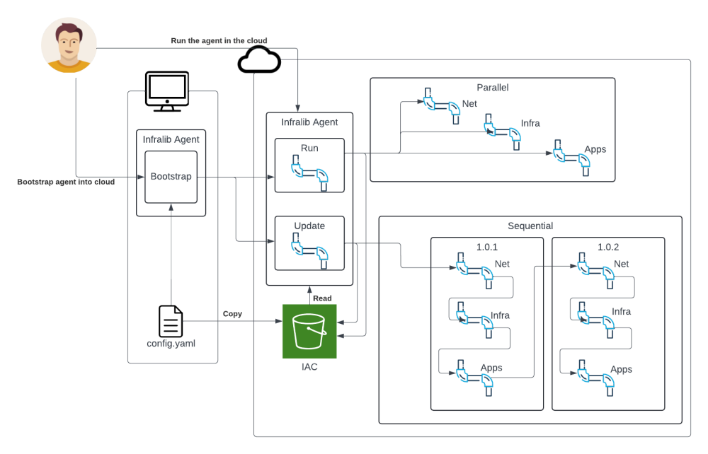
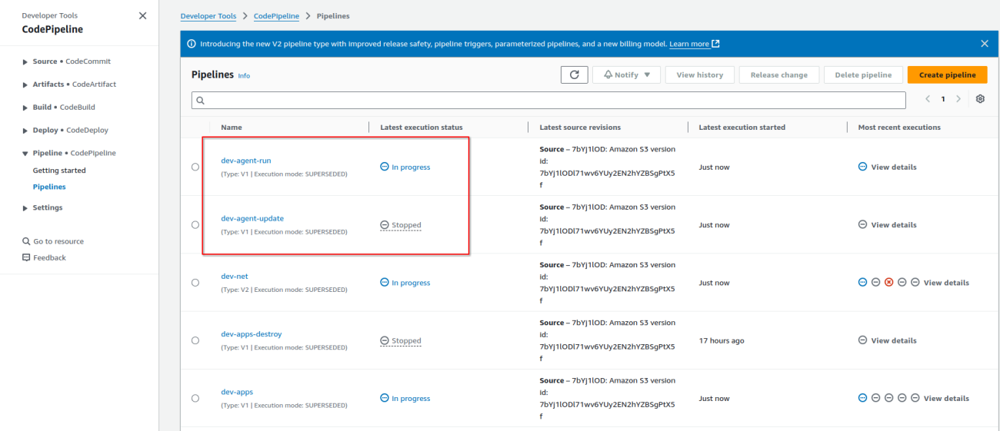
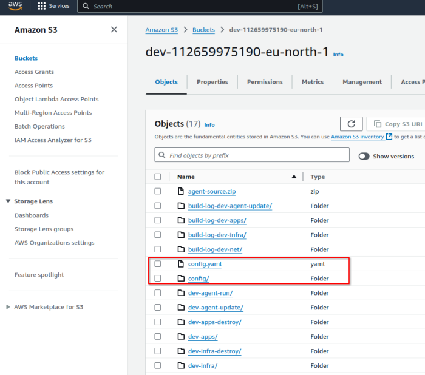

Infralib - Lab 2: Infralib Agent bootstrap and deploy pipelines

Run the Infrlaib Agent using Git as the source and create an alternative solution when the Git repository is not working.
To keep track of changes over time use a Git repository.
When multiple people are editing the configuration then these changes should be applied the same way and without conflicts.
Usually the Infralib Agent itself is executed by a pipeline. Use Gitlab to try it out.

The Gitlab pipeline needs credentials. The Infralib Agent can create needed credentials with the "service-account" command option.
$ docker run -it --rm -v "$(pwd)":"/conf" -e AWS_ACCESS_KEY_ID -e AWS_SECRET_ACCESS_KEY -e AWS_REGION -e AWS_SESSION_TOKEN entigolabs/entigo-infralib-agent ei-agent service-account -c /conf/config.yaml
Log in to Gitlab https://gitlab.infralib.learn.entigo.io/app-uN/iac/.
Login using these credentials:
Username: userN
Password: KubeLabN
Navigate to the "iac" repository Settings->CI/CD or use the following link https://gitlab.infralib.learn.entigo.io/app-uN/iac/-/settings/ci_cd.
Expand "Variables" then click on "Add variable".

Add a masked variable into Gitlab with the key AWS_ACCESS_KEY_ID. The credentials were saved in AWS SSM. Get the value for AWS_ACCESS_KEY_ID with the following command.
$ aws ssm get-parameter --name /entigo-infralib/dev-service-account-eu-north-1/access_key_id --with-decryption --query Parameter.Value --output text --region eu-north-1
Add a masked variable into Gitlab with the key AWS_SECRET_ACCESS_KEY. Get the value for AWS_SECRET_ACCESS_KEY with the following command.
$ aws ssm get-parameter --name /entigo-infralib/dev-service-account-eu-north-1/secret_access_key --with-decryption --query Parameter.Value --output text --region eu-north-1

The "Variables" view should be as in the picture below.

A pipeline configuration is needed to run the Infralib Agent in Gitlab.
Show ~/2/gitlab-ci.yml +
image: ${DOCKERHUB_PROXY}entigolabs/entigo-infralib-agent:latest
workflow:
rules:
- when: always
stages:
- build
dev:
stage: build
resource_group: build
variables:
AWS_REGION: "eu-north-1"
script:
- ei-agent run -c $CI_PROJECT_DIR/config.yaml
Copy the pipeline file for Gitlab and commit changes to git.
$ cp ~/2/gitlab-ci.yml ~/iac/.gitlab-ci.yml
$ git add --all
$ git commit -a -m"Add pipeline"
$ git push
To see the pipeline execution in Gitlab go to https://gitlab.infralib.learn.entigo.io/app-uN/iac/-/pipelines


The Infralib Agent now executes the steps in parallel.

Wait for the pipeline to finish before proceeding.
When the Git service runs on the infrastructure that is managed by Infralib Agent, then an outage could prevent the execution of the infrastructure pipelines.
Bootstrap the Infralib Agent itself into the cloud so it can be used without a workstation or Git service. This method can also be used if the project does not have a Git service at all.

Use the "bootstrap" command instead of the "run" command.
$ cd ~/iac
$ docker run -it --rm -v "$(pwd)":"/conf" -e AWS_ACCESS_KEY_ID -e AWS_SECRET_ACCESS_KEY -e AWS_REGION -e AWS_SESSION_TOKEN entigolabs/entigo-infralib-agent ei-agent bootstrap -c /conf/config.yaml
The bootstrap also starts the "run" command of the Infralib Agent in the cloud.
Now it is possible to run the pipelines and the Infralib Agent using only the cloud provider services. https://eu-north-1.console.aws.amazon.com/codesuite/codepipeline/pipelines?region=eu-north-1

The Infralib Agent log can be observed from the "agent-run" pipeline by using the "View details" of the "AgentRun" stage.
To update the Infralib modules, the "agent-update" pipeline can be used. At the moment there are no updates to be applied.
The "config" folder and file are also synced to the Object Storage bucket. The bucket has versioning enabled, so there is also a version history of the configuration.

Continue to Lab 3. https://html.infralib.learn.entigo.io/3